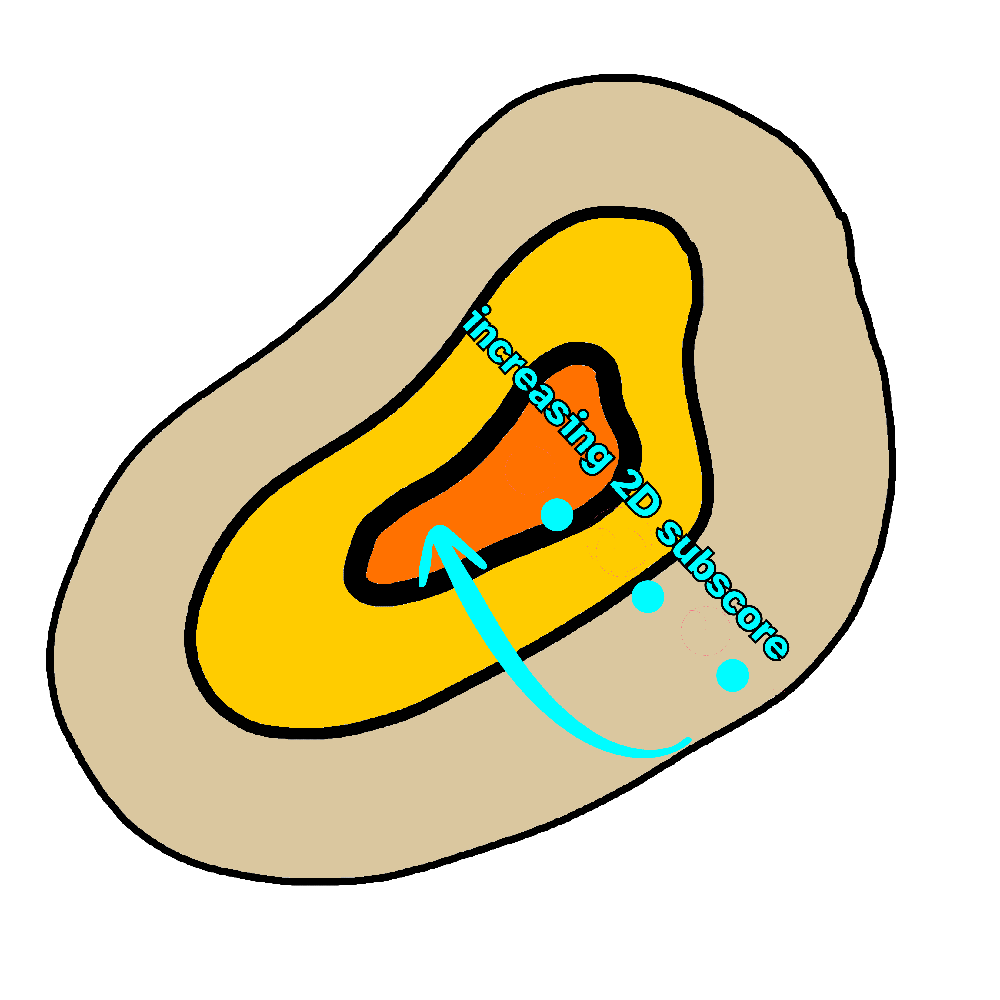
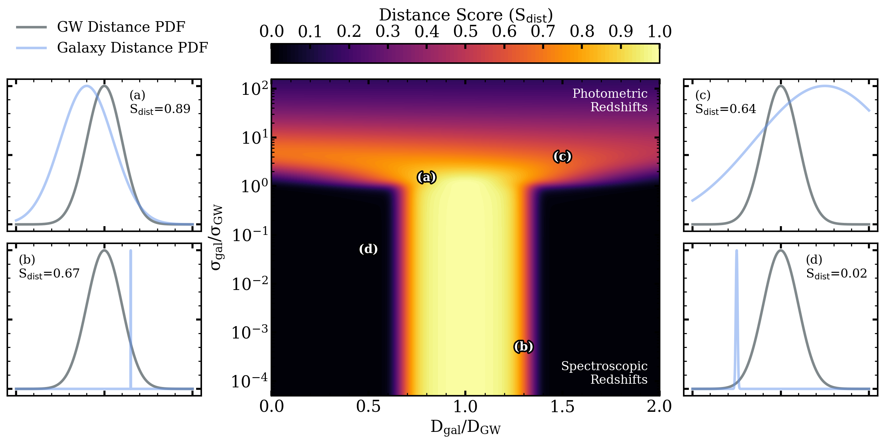
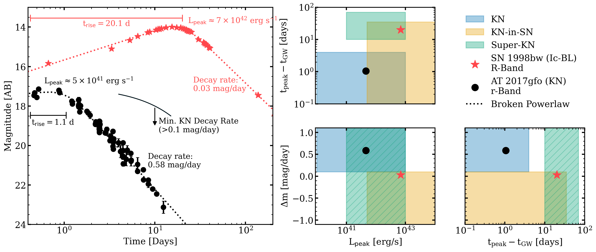

How Scoring Works#
This page very briefly describes the various subscores which go into the total, overall score. This overall score is a number between 0 and 1, and is a product of several other numbers (subsocres) which themselves are between 0 and 1. For details, see Franz et al., in prep.
Localization (2D) Subscores#
The 2D, skymap, or localization subscore quantifies whether a candidate sits squarely in the localization region of some event or on the edge.
The following cartoon explains the 2D score graphically:

Darker colors denote higher probability density in the localization region. We compute this subscore by finding the HEALPix in which a candidate lies, extracting the probability density from the skymap at that pixel, and then integrating over pixels at a higher probability density. Integration over all pixels is normalized to 1, such that the 2D subscore lies between 0 and 1.
Distance (3D) Subscores#
The distance subscore quantifies whether the estimated distance to a candidate is consistent with the distance of some event such as a gravitational wave. Distances to candidates are primarily estimated by associating them with a potential host galaxy at some measured distance. We perform this galaxy association using about 10 billion galaxies over several catalogs. For a table of galaxy catalogs used, see Catalogs Used in TROVE. Distances may also come from spectroscopy of individual candidates themselves.
The computation of the distance subscore has two regimes:
Uncertainty on galaxy distance \(\ll\) uncertainty on event distance (\(\sigma_{\rm gal} \ll \sigma_{\rm event}\)): The distance subscore roughly depends on how many standard deviations \(\sigma_{\rm event}\) away from the median the distance to the galaxy lies. This is the case for most spectroscopic redshifts given their tight uncertainties.
Uncertainty on galaxy distance > uncertainty on event distance (\(\sigma_{\rm gal} > \sigma_{\rm event}\)): We use the Bhattacharyya coefficient, which computes something like the overlap of the two distance posterior distributions. This is the case for most photometric redshifts, as they have broader uncertainties.
The following figure from Franz et al., in prep explains this distance score graphically, where the event in question is a gravitational wave:

We see a comparison of the galaxy / event distance posteriors and the resultant scores in four scenarios (a), (b), (c), and (d). The four scenarios shown are seen across candidates during a follow-up campaign.
Point Source and Solar System Object Subcores#
Candidates are disfavored (receive a subscore of 0) or favored (receive a subscore of 1) if they are associated or unassociated with a point source, respectively. These point sources are typically stars or variable stars; we perform cross-matching against the AGN included in some of these point source catalogs separately. For a table of point source catalogs used, see Catalogs Used in TROVE.
Candidates are disfavored (receive a subscore of 0) or favored (receive a subscore of 1) if associated or unassociated with a solar system object (SSO), respectively. SSOs and their ephemerides from the Minor Planet Center (MPC).
We only perform SSO association if a candidate is limited to a single photometric detection, as multiple detections at the same RA and Dec. (within uncertainties of ~2” for the astrometric precision of a candidates’ coordinates) would be inconsistent with an SSO, which moves on the sky over time.
If any SSOs are within 10° of a candidate at time of its initial (and sole) detection, we compute the full \(N\)-body dynamics of these SSOs. We consider a candidate associated with an SSO if it is within 25” of an SSO at the time of its initial (and sole) detection.
AGN Subscores#
Candidates are disfavored (receive a subscore of 0.1) or favored (receive a subscore of 1) based on their association within 2” with AGN and the overall score we are computing:
When computing the overall score that a candidate is consistent with a kilonova (KN), kilonova-in-supernova (KN-in-SN), or super-kilonova (super-KN), association with an AGN disfavors the candidate, and a subscore of 0.1 is set. This subscore is 0.1 rather than a hard 0 as there remains some uncertainty whether it is completely impossible for these classes of transient to lie within an AGN. (The host for GW170817, NGC 4993, was an active galaxy, though GW170817/AT2017gfo lay much more than 2” from the center of the galaxy.)
When computing the overall score that a candidate is consistent with a binary black hole (BBH) merger-induced AGN flare, association with an AGN should clearly favor rather than disfavor a candidate. A lack of association with an AGN disfavors the canddiate, and a subscore of 0.1 is set. This subscore is 0.1 rather than 0 due to the uncertain incompleteness of our AGN catalogs.
For a table of AGN catalogs used, see Catalogs Used in TROVE.
Photometry Subscores#
Users may compute the photometry subscore in three ways, depending on the overall score in question:
Based on light curve metrics. When scoring for KNe, KNe-in-SNe, or super-KNe, we (1) determine whether a candidate is detected earlier than expected given the time of the event (e.g., GW alert time) and estimate (2) the peak luminosity, (3) rise time, and (4) decay rate of the candidate’s light curve.
Using the
KilonovaSCORERtool to assess a candidate’s consistency with a suite of KN models.AGN flare
Light Curve Metrics#
The following table describes the metrics used in computing score factors which combine to set the overall photometry subscore, when using light curve metrics for computing this subscore:
GW Event Type |
EM Signature |
\(t_{\mathrm{GW}} - t_0\)
[days]
|
\(L_{\mathrm{peak}}\)
\([\mathrm{erg~s^{-1}}]\)
|
\(t_{\mathrm{peak}} - t_{\mathrm{GW}}\)
[days]
|
\(\Delta m\)
\([\mathrm{mag~day^{-1}}]\)
|
|---|---|---|---|---|---|
BNS/NSBH/SSM |
KN |
\(\leqslant 0\) |
\(< 10^{43}\) |
\(< 4\) |
\(> 0.1\) |
SSM |
KN-in-SN† |
\(< 1\) |
\(5\times10^{41} \rightarrow 10^{44}\) |
\(< 35\) |
\(-2.0 \rightarrow +0.1\) |
SSM |
super-KN‡ |
\(< 1\) |
\(10^{41} \rightarrow 10^{43}\) |
\(10 \rightarrow 70\) |
– |
Constraints on photometry metrics are based on a review of the literature on each type of EM transient. The metrics include (1) the GW event trigger date minus the first detection of the candidate EM counterpart (\(t_{\mathrm{GW}} - t_0\)), which is used as the threshold for selecting photometry for checking for pre-detections, the peak luminosity (\(L_{\mathrm{peak}}\)), the light curve rise time (\(t_{\mathrm{peak}} - t_{\mathrm{GW}}\)), and the decay rate (\(\Delta m\)). A positive \(\Delta m\) indicates fading. This table is adapted from Vieira et al. (2026).
That is, a candidate will also be disfavored if it is pre-detected, too dim/too luminous, rises too early or too late, or fades too slowly/too quickly, depending on the electromagnetic signature of interest. A candidate is considered pre-detected if the photometry contains three or more \(5\sigma\) detections within any 10 day window prior to the GW detection (minus one day, for KNe-in-SNe and super-KNe). Available models do not place any useful constraints on the decay rate of super-KNe, nor have super-KNe been observed in nature.
If a candidate’s photometry does not meet one of these criteria, a score factor of 0.1 is introduced. The photometry subscore may therefore be as small as \(10^{-4}\) or as large as 1.
These constraints can also be understood graphically:

On the left, we see \(r/R\)-band light curves for SN 1998bw and AT2017gfo, a SN Ic-BL and KN, respectively. The figure is annotated with estimates for the peak luminosity, rise time, and decay rate. On the right, we see how these estimates compare to our imposed constraints. AT2017gfo lies confidently in the ranges imposed for KNe. SN 1998bw, as a SN Ic-BL (a type of stripped-envelope SN), lies in the KN-in-SN and super-KN ranges.
KilonovaSCORER#
KilonovaSCORER assesses whether a candidate’s photometry is consistent with a suite
of synthetic KN light curves. At present, we test whether a candidate is
consistent with the simple two-component KN model of A. Villar et al. (2017).
See P. Darc et al. (2026)
for more details.
Flare#
Nuclear Offset Subscore#
X